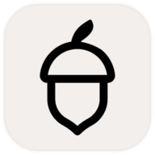

Updating Moss's tools to Holochain 0.7
A major Holochain bump is both a chore and an opportunity. The chore is much easier now, because LLMs do almost all of the grunt work, and there's a nice skill that does it well. The opportunity is that while I'm doing the manual test walk-through to make sure everything works, I notice bugs (serious and otherwise), as well as UX issues that really need addressing. Over the past couple of weeks I've done the full suite of updates, fixes and enhancements to all of our Moss tools in the library, and I'm quite pleased with the results.
Since almost all of it was done by LLMs, I thought it would be interesting to have this post, about what it took and what we learned, be written by an LLM as well. So below is the LLM's report of what it did and the lessons it learned along the way. For kicks, I asked it to write in my voice. It did a reasonable job, and it's worth reading. Three big topics:
- Maintaining DNA stability.
- Getting mature open-source UIs to work well with
Syn(our real-time engine). - Working with LLMs.
I've lightly edited what it wrote, because as usual there were some "brain" farts. So, anyways, enjoy!
-e
All fifteen of Lightningrod Labs' Moss tools are now on Holochain 0.7, and in the Moss 0.16 tool library.

AcornFiles and Vines are built on Damien's (ddd-mtl) libraries. Big thanks to him for letting us finish and publish their 0.7 ports.
If you use these tools: 0.7 is a new network. The 0.7 version of a tool can't see anyone still on 0.6, so upgrade together as a group. Most tools have export/import to bring your stuff along, and each tool's changelog in Moss says how. Nothing changed on Moss 0.15, so nobody gets stranded before they're ready to move.
The bytes are the agreement
A DNA's hash is its identity. Change one byte of the compiled wasm and you have a different DNA, which means a different network. Everyone on the old one is now alone in a room nobody else can get into.
That makes "we didn't touch the DNA" a slippery claim. Wasm builds aren't reproducible by default, because absolute file paths end up in the debug sections. At one point we added a comment to an integrity zome in Emergence. Just a comment, and the hash moved: Holochain's error macro bakes line numbers into the binary.
So instead of trusting ourselves not to rebuild, we made rebuilding impossible:
- Each tool's happ is built once, stripped with
wasm-opt, and published as its own release, with its hash recorded in the repo. - Every UI release downloads that frozen happ.
- CI refuses to publish if the hash inside the package doesn't match.
Every happ on the 0.16 list is byte-for-byte what we froze, and we can ship UI fixes whenever we like without splitting a group.
It's also why we didn't wait for Holochain 0.7.1. Its HDK and HDI differ from 0.7.0 only in version pins; the breaking changes are in the conductor, which Moss ships, not us. Rebuilding against 0.7.1 would have forked every network for nothing, so these tools stay pinned to exactly 0.7.0.
Syn as glue
When Will and I first sketched out Syn, the idea was a general pattern for real-time collaboration on Holochain. This upgrade made clearer to me what that pattern is: glue between two layers of mature technology.
Automerge is a CRDT library people have spent years getting right. You don't write merge logic or sync code. You describe your state and its changes, and build the interface.
KanDo and Talking Stickies are home-grown UIs built this way. But the pattern also lets you take a full-featured editor and make it collaborative peer-to-peer. Spreadsheets does it with Univer's spreadsheet engine, and Slate with Excalidraw, the whiteboard many of you already know. Both have been in Moss for a while, and both have been fragile. Making them work well is the part of this upgrade I'm proudest of.
The trick was to lean on both layers and invent nothing in between. That's easier said than done, because the editors are still getting there too. Their teams have been adding the hooks that real-time collaboration needs release by release, the same way we have in Syn, and moving to their current versions is what finally made things work. Excalidraw stamps every element with a version number and a random nonce, and settles conflicts with one rule: higher version wins, and on a tie, lower nonce wins. Univer expresses every change as a small mutation it can replay from a collaborator. Automerge merges, the editor decides what a change means, and Syn carries it between peers.
Spreadsheets
Spreadsheets moved to the current Univer engine, four releases newer. Univer calls those breaking changes, but the saved workbook format hadn't changed, so old boards open fine.
Then came my favorite bug of the upgrade. Add a sheet, and everyone else saw it, but it vanished from your own screen. Delete one, and every sheet except the first disappeared. Reload, and everything was back.
The reload was the tell. The shared change log had been correct all along; only your local view was wrong. A reconciler was comparing the live workbook against the board's original creation snapshot, which never updates, and "fixing" the difference by deleting anything that wasn't there on day one.
With that fixed, undo started working too, and the way you'd want in a collaborative tool. In both editors undo is local to each person, and your peers' changes never land on your undo stack. (Spreadsheets gets that from how it replays peer changes; Slate has to tell Excalidraw explicitly.) Undo only undoes your own edits, which is right when five people are in the same document.
Slate
Slate used to get collaboration wrong in an understandable way. It ignored remote changes while you were drawing, then saved the whole scene when you finished. If someone moved a shape while you were mid-stroke, your save could quietly put it back.
Now it applies Excalidraw's version rule in both directions, and merges into the shared document property by property: if you recolor a box while I'm moving it, we both get our way. A freehand stroke appends only its new points instead of rewriting the whole line on every save. And it runs on Excalidraw 0.18 now.
Collaboration bugs only show up when more than one person is using the thing, and clicking around in three windows only gets you so far. So before shipping Slate we built a harness that runs three real agents (three conductors, three browsers) and checks that everyone ends up with the same drawing after:
- each agent editing its own shapes at the same time
- two agents editing the same shape at once: dragging, text, properties, undo
- long freehand strokes, alone and all together
- soak runs of continuous random editing
It found a real bug right away. When two people edited the same shape at the same moment, Automerge merged both edits correctly, but the merged shape carried a version and nonce that one canvas already had. That canvas decided nothing had changed and stayed stale for good. Every copy of the document agreed, and one screen was wrong. Slate now compares content, not just the version stamp, when it takes a peer's copy of a shape. The same round of fixes stopped board switching from folding the old board's drawing into the new one.
A 200-round soak with three agents:
That's three conductors on one machine, so a real network will be slower. What mattered is that it converged every time. Slate 0.5.0 shipped on those results.
Working with agents
I wrote a plan with a standard recipe for each tool. LLM agents did most of the porting, and separate agents reviewed that work. My part was what they can't do: open each tool in Moss as two users and decide whether it was ready to publish. Apart from Slate's, most of the bugs above turned up in those walkthroughs.
The agents were fast and mostly very good, and also wrong in instructive ways. One reported CI as green after checking only the release workflow, while the test workflow on two repos had been red the whole time (an old Nix couldn't evaluate the new toolchain). Another agent's "passing" test log contained a crash that never used the word "error".
What worked: every claim comes with evidence, and another agent goes and checks it.
What's next
Updating the Tauri-based Android builds of Vines, Emergence and KanDo.
And Moss itself. Moss 0.16.0-dev.6 (test 17) is out as a pre-release, and we'd love help testing it. Read the note at the top of the release first: it runs a patched Holochain and can only see people on the same build, so install it together with whoever you're testing with.
It's trying out a new handshake between peers. To connect in a group, a peer has to prove it knows the group's secret, so someone who only learns a group's ID can't gossip with it or find out who's in it. The handshake also introduces new members right away; today someone who just joined can stay invisible to the group for up to five minutes. More like this is coming before the official 0.16 release.
See you in Moss!
P.S. For the technically inclined:
- The frozen-happ release scripts are in each tool's repo. Start with
RELEASE.mdin notebooks. - Slate's Excalidraw merge is in
ui/src/elementSync.ts, and the three-agent harness is ine2e/, both in slate. - The skill covers the gotchas that cost us the most time: npm caret ranges on 0.x versions, two git tags of one repo quietly putting two copies of a crate in your DNA, and the Rust 1.91 floor for the 0.7 crates.